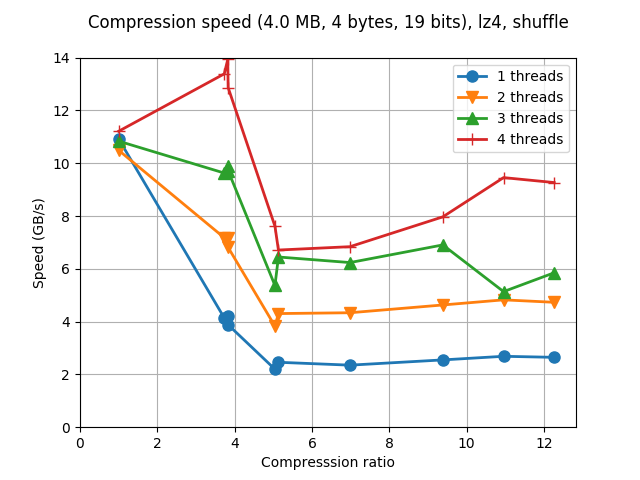
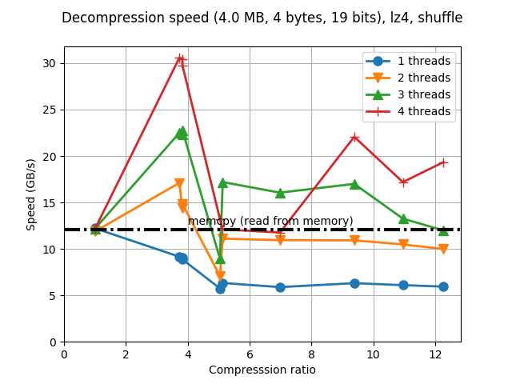
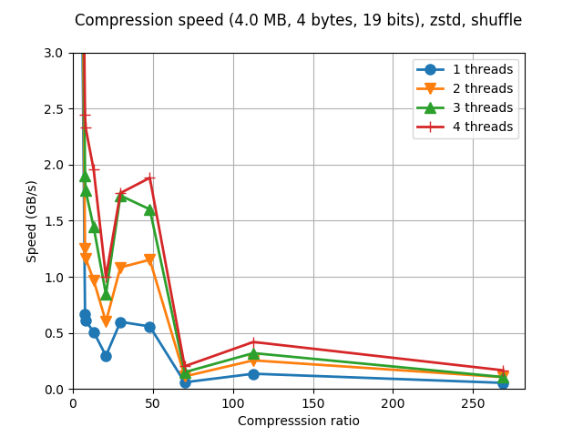
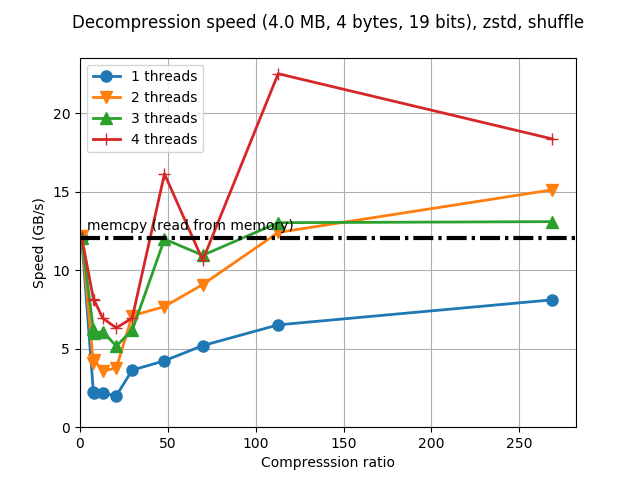

Testing PGO with LZ4 and Zstd codecs
In past week's post I was showing how the PGO (Profile Guided Optimization) capability in modern compilers allowed for a good increase in the performance of the BloscLZ codec. Today I'd like to test how the PGO optimization affected the speed of the same synthetic benchmark that comes with C-Blosc2 for the two other of the most used codecs in Blosc: LZ4 and Zstd.
LZ4
First, for GCC without PGO:
|
|


Now with PGO enabled:
 |
 |
We can see here that, similarly to BloscLZ, although the compression speed has not improved significantly, the decompression is now reaching up to 30 GB/s, and for high compression levels, up to 20 GB/s, which is pretty good.
Zstd
First, for GCC without PGO:
|
|


Now with PGO enabled:
 |
 |
Wow, in this case we really can see important speedups in both compressing and decompressing. Specially interesting is the decompression case where, for the higher compression levels, Zstd can reach speeds exceeding 20 GB/s (whereas without PGO it was not able to exceed 12 GB/s) which seems a bit crazy provided the wonderful compression ratios that Zstd is able to achieve. Beyond any doubt, for Write Once Read Multiple scenarios there is no competitor for Zstd, most specially when PGO is used.
This confirms that, once again, when performance is critical for your applications, PGO should be part of your daily weaponery.
Appendix: Hardware and software used
For reference, here it is the configuration that I used for producing the plots in this blog entry.
CPU: Intel Xeon E3-1245 v5 @ 3.50GHz (4 physical cores with hyper-threading)
OS: Ubuntu 16.04
Compiler: GCC 6.3.0 (using PGO)
C-Blosc2: 2.0.0a4.dev (2017-07-11)
LZ4 codec: 1.7.5
Zstd codec: 1.3.0
Comments
Comments powered by Disqus